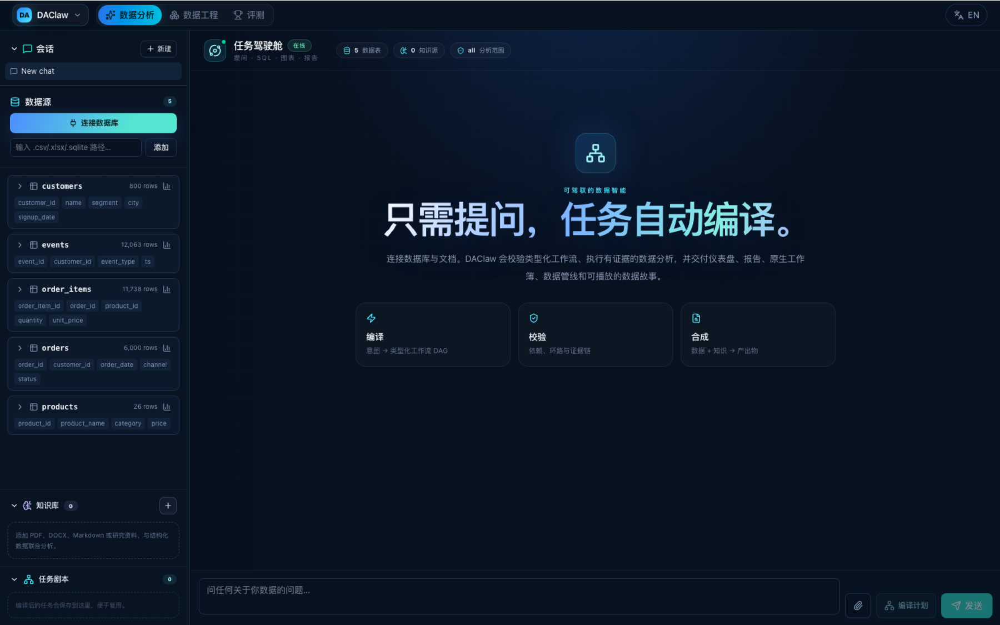

Compile
Natural language becomes a typed workflow DAG with explicit sources, tools, outputs, and dependencies.
intent→typed nodes→DAG
DAClaw turns one business question into a typed, validated workflow that connects data and knowledge, executes grounded analysis, and delivers dashboards, reports, native workbooks, pipelines, and data stories.
Linear chat hides the work. DAClaw makes the plan inspectable before execution, keeps the evidence visible during execution, and lets people reshape the workflow before launch.
Natural language becomes a typed workflow DAG with explicit sources, tools, outputs, and dependencies.
DAClaw checks dependencies, cycles, execution layers, data scope, and the evidence contract before work begins.
Review the mission, remove optional nodes, reconnect the flow automatically, and launch only when it is right.
One mission can produce interactive charts, dashboards, reports, native Excel, pipelines, and cinematic stories.
The video stage is ready. Add one file or URL in site-config.js and the placeholder becomes the player.
Multi-table SQL, profiling, charts, dashboards, reports, visible execution traces, and grounded answers.
DuckDBSearch PDFs, DOCX, Markdown, JSON, and HTML alongside structured data without sending the corpus elsewhere.
Local-firstNatural language to staging, intermediate, and marts models with ref/source lineage and real materialization.
Auto-DBTEditable charts, formula-driven financial models, offline recalculation, audit, repair, and verification.
XLSXTransform query-backed evidence into an autoplay narrative with KPI scenes, charts, tables, and recommendations.
Cinematic HTMLCompare models, agent harnesses, and full-stack data-agent benchmarks across atomic, engineering, and analysis tasks.
Model × HarnessActual DAClaw interfaces — no concept renders.

Compile a data mission, connect tables and knowledge, then watch the real tool workflow execute.
Flexible enough for exploration.
Strict enough for data.
DAClaw combines the adaptability of an agent with the contracts of a data system: typed nodes, read-only SQL, inspectable evidence, sandboxed sources, and reusable workflows.